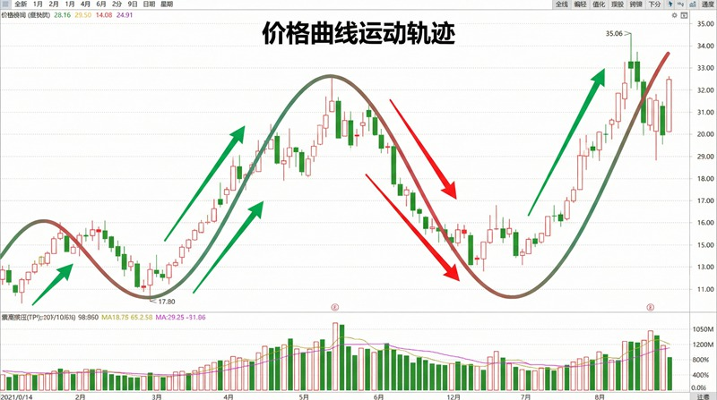
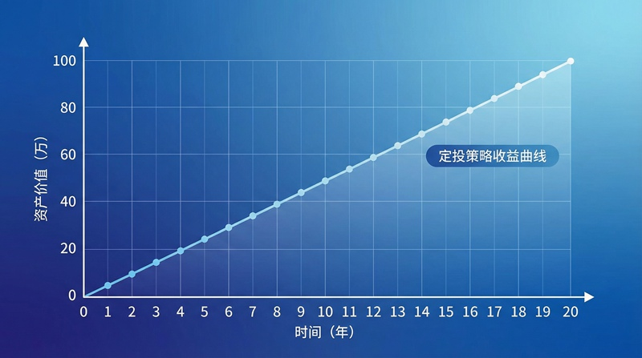

返回课程列表
第三课
运动学
价格走势的运动学分析与趋势预测
⏱️ 约50分钟
运动学研究物体运动的几何性质，包括轨迹、速度和加速度，而不考虑引起运动的力。 在金融市场中，价格走势也有类似的特征：上涨、下跌的速度，趋势的加速度，都可以用运动学来分析。
点的运动描述
描述点的运动有三种方法：矢量法、直角坐标法和自然法。股票价格的运动也可以用类似的方法描述： 价格随时间变化的函数、K线图上的坐标表示、以及趋势线的自然描述。

股价运动的「轨迹分析」
技术分析本质上就是研究价格的运动轨迹：
- 位置函数：P(t)表示t时刻的价格，就像质点的位置随时间变化
- 速度指标：价格变化率，5日均线反映短期速度，60日均线反映长期速度
- 加速度：速度的变化率，MACD指标可以看作是价格的"加速度计"
- 轨迹形态：头肩顶、双底等形态，就像运动轨迹的几何特征
速度与加速度
速度描述位置变化的快慢，加速度描述速度变化的快慢。在趋势分析中， 价格的上涨速度反映市场热度，加速度的变化则预示趋势可能转折。
趋势分析的「速度-加速度」模型
理解速度和加速度有助于判断趋势强度：
- 匀速上涨：价格以稳定速度上涨，斜率不变，趋势健康可持续
- 加速上涨：上涨速度越来越快，斜率增大，可能接近顶部（正加速度减小）
- 减速上涨：上涨速度变慢，斜率减小，趋势可能即将反转
- 背离信号：价格创新高但速度指标（如MACD）未创新高，预示动能不足
抛体运动与价格预测
抛体运动是曲线运动的典型例子，其轨迹是抛物线。金融市场中， 价格的上涨和下跌也常常呈现抛物线形态，理解这种运动有助于预测价格目标。

抛物线运动的「价格应用」
抛体运动的规律可以应用于价格分析：
- 对称性原理：上涨和下跌往往具有时间对称性，涨多久可能跌多久
- 最大高度：抛物线的顶点对应价格的极值点，可以通过速度为零来判断
- 射程计算：从起点到终点的水平距离，对应价格的涨跌幅目标
- 黄金分割：斐波那契回调位与抛物线的几何性质有内在联系